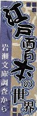
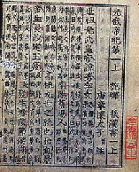

ココで青[虫夫]牌の話を書いた。その中で「青[虫夫]（チンフー）は蜉蝣（かげろう）の幼虫で、中国古牌で１索に青[虫夫]が描かれている牌があるのは、中国で青[虫夫]は金に縁のある虫ということになっているから」とも書いた。もちろんそれに間違いはないが、06.10.18付けの中日新聞の「江戸面白本の世界（塩村 耕=名古屋大学大学院教授 ）」というコラムに、興味深い記事が載っていた。

全文を掲載したいが、なにか問題があるといけない。そこで要点のみを紹介する。それによると....
明和二（1765）年、尾張名古星藩の高名な漢学者、岡田新川（おだかしんせん（1737−99年）が,名古屋の玉屋町にあった某古書店で「後漢書」二十八冊を購入した。珍しい古活字版であったが６冊の欠本があったので安かったという。

その後 岡田の師で、やはり名古屋藩儒の松平君山（まつだいらくんざん）の家から出たという「後漢書」４冊を古紙回収業者が持ってきた。みると欠本６冊のうちの四冊であったので格安で買い入れた。
さらに安永七（1778）年、門人の奥田世達（おくだせたつ）が某家の蔵書から出た欠本二冊を入手して師に贈った。こうして十数年がかりで、散逸していた本が元通りに揃った。岡田はその喜びを、「豈に天縁奇事に非ざらんや」と記しているという。
その後、天明二（1782）年に岡田が人見機邑（ひとみきゆう（1729一97年）にこの本を見せ、入手話も聞かせたところ、人見が「こんどは青[虫夫]の血を本に塗っておきなさい」と言ったので大笑いとなったという。それは青[虫夫]の母と子の血を別々に銭に塗っておくと、それをつかってもまた舞い戻ってきて元通りにそろうという中国の故事があるからだという。
なるほろ。青[虫夫]は金富（チンフー)、あるいは金福（チンフー)つながりで金に縁のある虫ということになっているというぐらいの認識しかなかったが、互いを慕って戻ってくるとまでの話は知らなんだ。念願の書籍を入手した喜びに共感を覚えるとともに、大いに勉強になった。(^-^)V
青[虫夫]について中国の言い伝え。
南方有虫名青虫夫。大如蚕子。取其子 母即飛来。
大意：南方に蚕（かいこ）の子ぐらいの大きさの青虫夫という名の虫がいる。子を奪うと、母虫がすぐ飛来する。
どうしてもコラム全文を読みたい人はコチラ
|